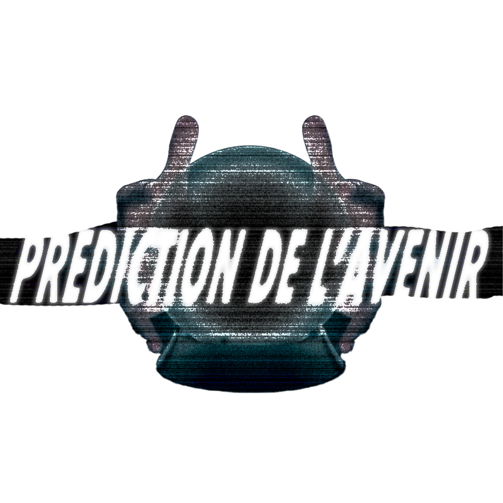

SITE
DETENU DESIGNER ET ACUALISER PAR 18NELLI - CORBEILLE EN LIGNE- ARCHIVES - MUSIQUES - PHOTO - PROJET - VIDEO

liens pour accede aux trucs:
· Photos !!!
· Trucs !!!
· MusiQue !!!
· Blog !!!
CD Player
_ ◻ ✕
[00] 00:00
⏮
▶
⏸
⏭
Artist:
18nelli
Title:
Track 01